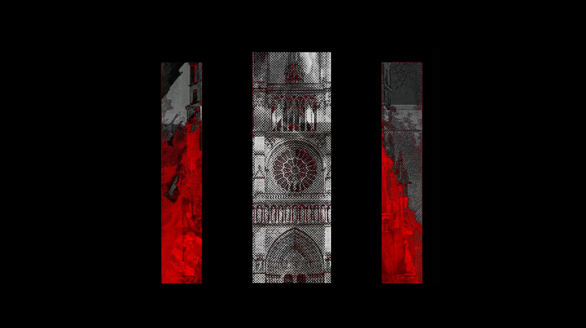
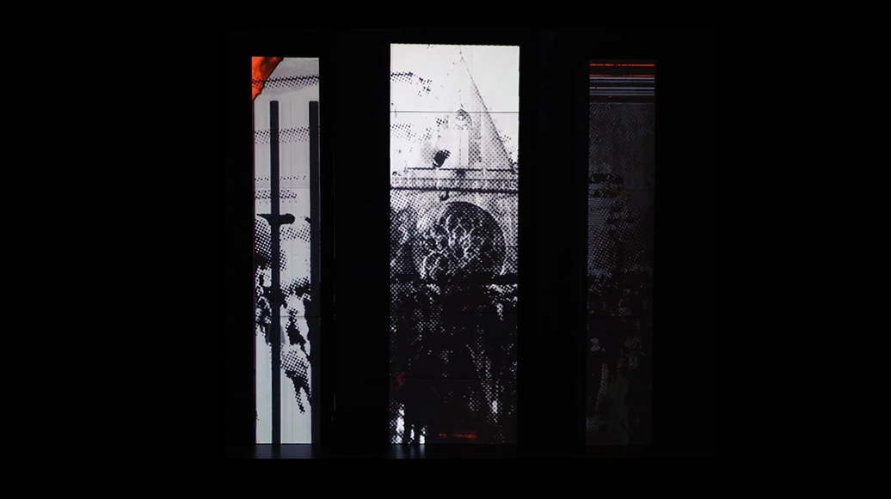

CHAMBRE NOIRE
Réalisation d’une vidéo sur le thème de la cathédrale, ensuite projetée sur un dispositif de trois colonnes. Le projet suit une narration autour de la cathédrale, vue sous plusieurs angles et regards.
Notre parti-pris a été de mettre en avant ses détails et ses caractéristiques symétriques.
Collaboration : Nathan sonzogni + Serena taleb.


